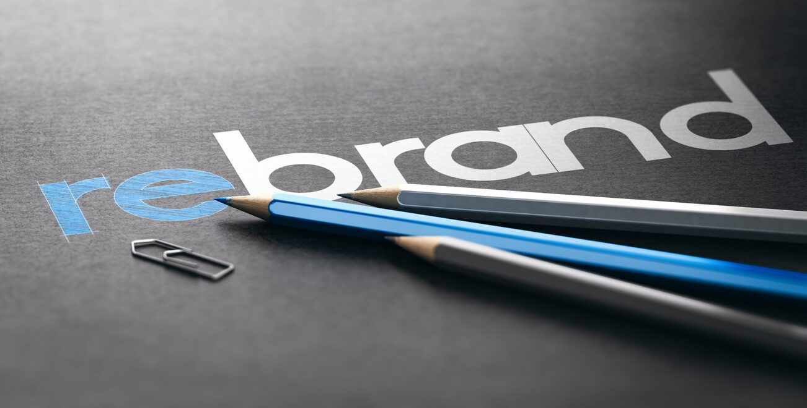

M Corp Leaders on the Company's Transformation, Rebrand to '11:59'

The Story of M Corp's Transformation and Rebranding
M Corp, a technology company, had been struggling for years to keep up with the competition and meet the demands of their clients. The company had outdated systems, slow processes, and a staff that lacked motivation and direction. The leaders knew that drastic changes needed to be made if they were going to survive in the competitive tech industry. One day, the CEO called for a meeting with the executive team to discuss rebranding and transforming the company. The team was excited and ready for the challenge. Together they came up with a plan to turn the company around and rebrand it as '11:59.' The rebranding and transformation process was intense and required significant effort and investment. However, the team was determined to succeed. They went through a long process of market research to understand their client base better. They were determined to figure out what the company's strengths were and how they could offer value to their customers. After months of research and planning, the '11:59' brand was launched, and within a few weeks, the company's entire image was transformed. Their clients were impressed with the renewed commitment to innovation, customer service, and quality standards.
Examples of Successful Rebranding and Transformation
Rebranding and transforming a company can be a significant undertaking, but with the right approach, it can lead to tremendous success. Here are some examples of companies that have gone through successful transformations:
Microsoft
Microsoft is an example of a company that has undergone significant transformation and rebranding over the years. In the early 2000s, they were struggling to keep up with the competition, and their image was outdated. However, the company's leadership team made a significant investment in market research and rebranding efforts. Today, Microsoft is one of the most successful technology companies in the world, with an updated image and a renewed commitment to innovation.
Starbucks
Starbucks is another example of a company that successfully transformed and rebranded itself. In the early 2000s, the company faced significant challenges and was struggling financially. However, the CEO and leadership team made a strategic decision to rebrand Starbucks as a lifestyle brand. They innovated with new products, store layouts, and a renewed focus on the customer experience. Today, Starbucks is one of the leading coffee brands in the world.
Conclusions in 3 Points
Transforming and rebranding a company can be a challenging and time-consuming process. Here are three key takeaways from the success stories we've discussed:
1. Invest in Market Research
Market research is crucial to understanding your customer base and what they are looking for. It is essential to enhance your branding strategy efforts.
2. Focus on the Customer Experience
A successful company must prioritize the customer experience. By placing a renewed focus on impeccable customer service, the client base will see significant changes.
3. Take Calculated Risks
Rebranding and transforming your company may require taking calculated risks. By betting on new products or stores without proper research, the company can fall in a significant loss.
Reference URLs and SEO Keywords
Reference URLs: 1. https://www.microsoft.com/ 2. https://www.starbucks.com/ 3. https://www.1159tech.com/ Hashtags in Trending Order: #Transformation #Rebranding #Marketing #MarketReasearch #Business #Innovation #1159Tech SEO Keywords: Transformation, Rebranding, Renewed Commitment, Customer Experience, Market Research, Innovative Practices. Article Category: Business / Technology
Curated by Team Akash.Mittal.Blog
Curated by Team Akash.Mittal.Blog
Share on Twitter Share on LinkedIn